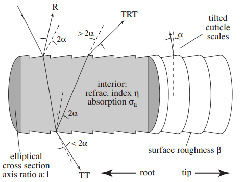

Hair Anisotropic
비등방성(非等方性)(anisotropy)은 방향에 따라 물체의 물리적 성질이 다른 것을 말한다.
예를 들어, 솔질이 된 알루미늄, 섬유, 옷감, 근육 등의 표면은
들어오는 빛의 방향에 따라 반사율이 다른 광학적 비등방성을 띈다.
- https://ko.wikipedia.org/wiki/비등방성
- Kajya-Kay 모델 - SIGGRAPH 1989
- 짧은머리는 괜춘. 빛의 산란효과는 별로
- Steve Marschner 모델 - SIGGRAPH 2003
- 빛의 산란효과 개선(반사/내부산란/투과)
- Scheuermann - Hair Rendering and Shading - GDC 2004


- 【Unite Tokyo 2018】『崩壊3rd』開発者が語るアニメ風レンダリングの極意
- https://graphics.pixar.com/library/DataDrivenHairScattering/
Kajiya-Kay
-
SIGGRAPH 1989

// Sphere
// T | r | 오른쪽
// B | g | 위쪽
// N | b | 직각
// 논문에서 T. 방향은 머리를향한 위쪽 방향.
// half3 T = normalize(IN.T);
// Sphere에서는 B가 위쪽이므로 B로해야 원하는 방향이 나온다.
half3 T = normalize(IN.B);
half sinTH = sqrt(1 - dot(T, H) * dot(T, H));
half specular = pow(sinTH, specularPower);
Marschner
- SIGGRAPH 2003
- blog - Hair Rendering Lighting Model - (Marschner)
- pdf - Light Scattering from Human Hair Fibers - Stephen R. Marschner, Henrik Wann Jensen, Mike Cammarano
- 2020 - Dev Weeks: A3 Still Alive - Technical Art Review

| R | 반사 |
| TRT | 산란 |
| TT | 투과 |
- 2개의 반사를 이용.
- Tangent를 이동 (+ TangentShiftTex)
- 1번째 반사(RR)
- 두번째반사(TRT) (+ SpecularMaskTex)
Scheuermann
- GDC 2004 Hair Rendering and Shading
- Kajiya-Kay랑 Marschner를 믹스함
에니메이션
Ref
- Hair in Tomb Raider
- ShaderX3 Advanced Rendering with DirectX and OpenGL
- 2.14 Hair Rendering and Shading